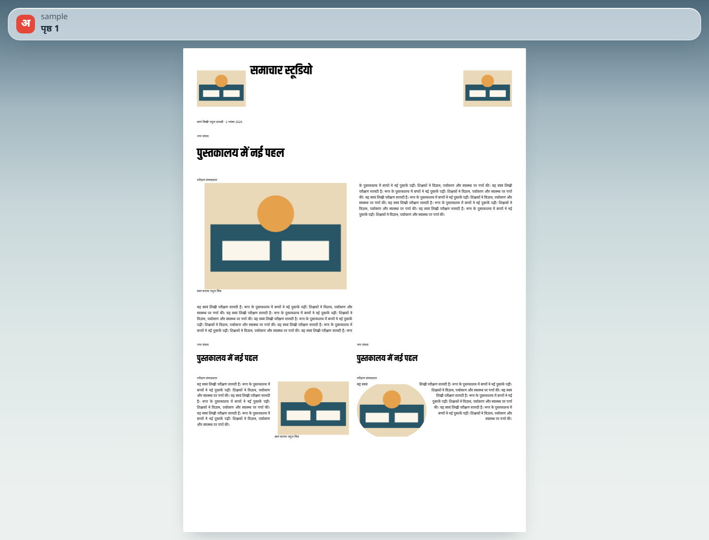

T2: Studio app opens an issue and draws page 1 (editor slice 2 of 4)
New Next.js app apps/studio (Next 16.4.5, React 19.3.1). Run it with npm run dev -w @studio/app, then open http://localhost:3210. It reads data/issues/sample.json, a four-page issue built by scripts/sample-issue.mjs from the reviewed golden pages. The engine's new pageLayout() sets every line, and the app only places those lines. Line breaks never come from CSS.


Checks
| Check | Result |
|---|---|
| Engine layout unit test | 9 passed: body lines equal flow(); overflow does not throw; last line not justified; empty slot kept; headlines from layoutHeadline; photos, rules and shape outlines passed through; missing ink fails loudly; no mutation |
node scripts/smoke-studio.mjs | SMOKE PASS: 40 lines drawn, 0 wider than their box, 0 console errors |
| Side by side | Same line breaks as export on every story. The shaped photo is clipped to its outline as in export. |
Not yet: fit marks, page strip, selection (T3); undo and redo controls (T4). The page baselines use ink metrics from fonts/ink.json; export measures ink per line, so a fraction of a pixel of vertical difference is possible (GG-082).